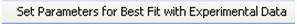

The “Adjust Parameters” tab contains three panels. These are Plot FRAP Simulation Results panel, Plot Derived FRAP Simulation Results panel and Plot panel. Plot FRAP Simulation Results panel and Derived FRAP Simulation Results panel work exclusively. Plot FRAP Simulation Results panel is enabled by default. Below describes the different functionalities of the two panels.
-
Plot FRAP Simulation Results
When users select Plot FRAP Simulation Results, the table in the panel is enabled. The table shows the simulation results which are compared with experimental results in terms of standard deviation in each ROI. The spatial simulation here is based on the initial FRAP parameters users set in the previous tab.
-
Plot Derived FRAP Simulation Results
When clicking on Plot Derived FRAP Simulation Results, the corresponding panel is enabled. The panel enables users to tune a primary diffusion rate together with a secondary diffusion rate together with the bleach while monitoring rate. Users can set values either by typing into the text fields or turning the slider bars. When each set of parameters have been confirmed, the plot will update the display with the new simulation results.
Users can click on the best fit button  to get the best fit parameters. If users want to set parameter values manually, users need to click on the set button
Figure 3-6 shows the Adjust Parameters panel and the illustrations of its functionalities. . When tuning the slider bar, the display in plot will be updated automatically. The spatial simulation results show in “2D Results” tab is based on the initial parameters. Users may want to rerun the simulation by the new parameter set.
It can be achieved by simply clicking on the create new FRAP document button .
. When tuning the slider bar, the display in plot will be updated automatically. The spatial simulation results show in “2D Results” tab is based on the initial parameters. Users may want to rerun the simulation by the new parameter set.
It can be achieved by simply clicking on the create new FRAP document button .
Figure 3-6: Adjust Parameters tab and its functionalities